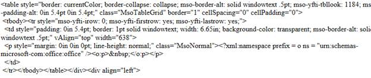
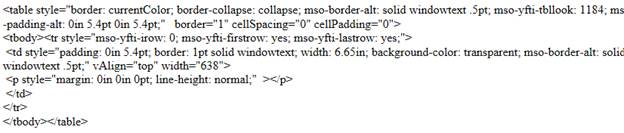

When you copy a part of a Word document and paste it into the RTE, the tags associated with the entire Word document are copied to the HTML source page.
This feature helps you to clean up the unnecessary HTML tags
in your RTE, and leads to the creation of a valid XHTML document.
When it is not enabled, the tags for the whole document are available.

Figure 220: Code for text copied from a Word document, with XHTML disabled
If the user enables XHTML, the HTML tags get cleaned up.

Figure 221: Code for text copied from word, with XHTML enabled
Use Case Scenario
The user can clean up HTML tags, and copy the tags that are specific to the portion of the Word document copied.
Where do I find Installed samples?
Sample Installation Location
XHTML samples for MVC Tools are installed under the following location:
C:\Syncfusion\Essential Studio\vx.x.x.x\MVC\Tools.MVC\Samples
Viewing Samples
To view the samples:
1. Click Dashboard.
2. Click the Run Locally Installed Samples link. The Essential Studio MVC Edition sample browser is displayed.
3. Select Tools from the drop-down.
4. Select any sample from the Rich Text Editor tab and browse through the features.
 How to Clean up the HTML tags in the
RTE
How to Clean up the HTML tags in the
RTE